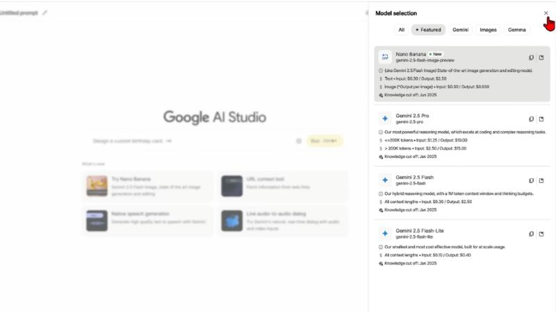
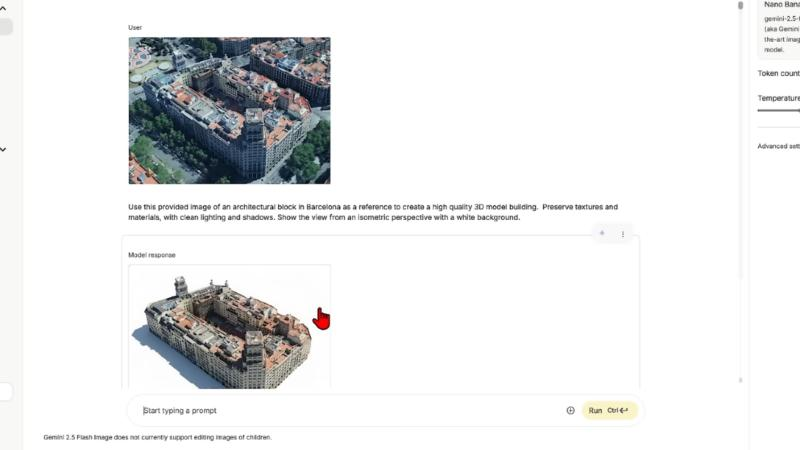
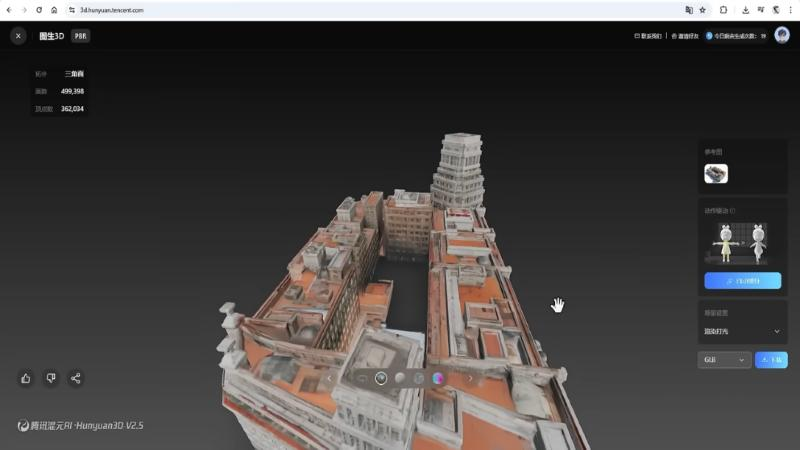
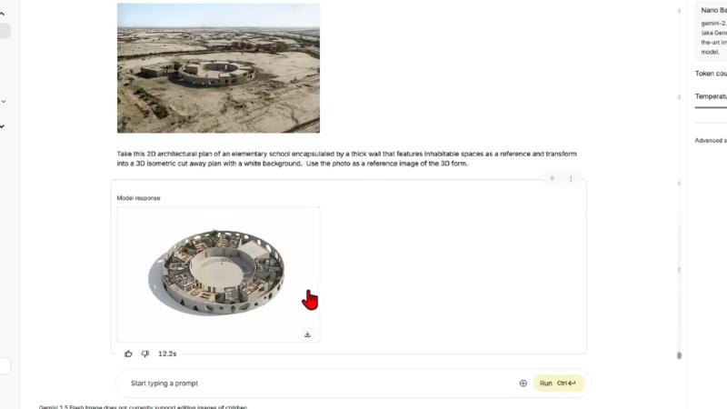
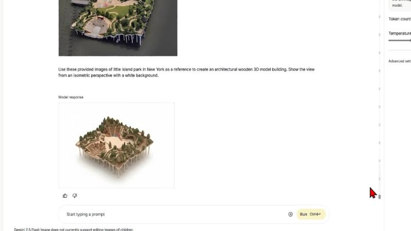
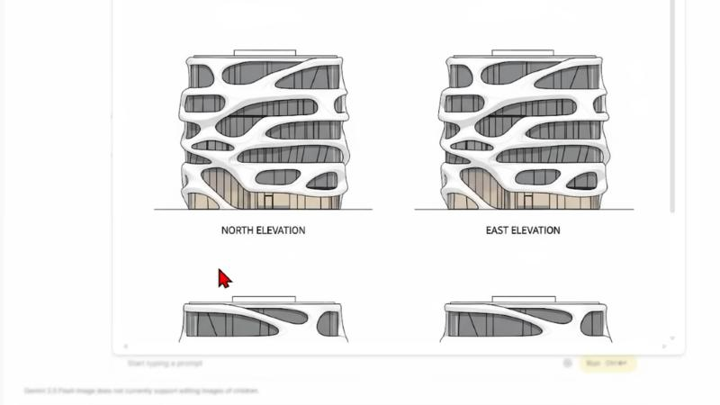

The thing that made Nano Banana interesting for architects was not image quality. It was object consistency — the ability to take a 2D plan, or a messy Google Earth screenshot, and produce a convincing 3D reading of it that still resembles the source.
This is the beginner's run-through: how to get at it, then four workflows that produce clean diagrams, isometric views and, at the end, actual geometry.
On naming. When this was recorded, Nano Banana was the nickname for
gemini-2.5-flash-image-previewin AI Studio, and it was free to try. The model list has moved on — Nano Banana Pro is the current one — but the prompts and the workflow are unchanged, and the newer model does all of this better.
Getting set up
Go to Google AI Studio, sign in with a Google account, accept the terms. Top right, pick the Nano Banana image model from the model selector.

Two things to know:
- It is multimodal — you are not limited to text, you can drop in images and other media.
- There is a token count at the top right showing the limit for the current conversation. Text and references both count. When you hit it, start a new conversation; nothing is lost but the thread.
1. Google Earth to a clean isometric — then to 3D
Set the base map to clean so the labels disappear, find a block you like, and screenshot a good angle. A dense Barcelona block is a fair test.
Use this provided image of an architectural block in Barcelona as a reference to create a high quality 3D model building. Preserve textures and materials, with clean lighting and shadows. Show the view from an isometric perspective with a white background.

About ten seconds. The block comes out matching the source, pulled free of the messy context, with trees and heavy shadows removed and the faces it could not see reconstructed plausibly.
A clean isometric on white is exactly what an image-to-3D generator wants. Run it through Hunyuan 3D — or Tripo, which behaves the same way — and a minute later you have geometry.

Roof levels and window recesses came through; the interior courtyard is weak because nothing in the reference showed it. The more angles you give it, the more it gets right — that rule holds across every workflow here.
2. A 2D plan into a cutaway axonometric
The one that surprises people. A real plan — an elementary school by Daaz Office — plus one external photograph:
Take this 2D architectural plan of an elementary school encapsulated by a thick wall that features inhabitable spaces as a reference and transform into a 3D isometric cut away plan with a white background. Use the photo as a reference image of the 3D form.

If you supply only plans, describe the materials and sizes explicitly. Otherwise add images showing what you want.
It picked up the inhabited voids in the thick wall and furnished the spaces convincingly. It also invented rooms where the plan showed empty space, put trees in odd places, left some rooms uncut, and added number annotations nobody asked for.
All of that is fixable by iterating — ask for the trees to go, the room to be cut, the annotations removed — and each correction landed. Take the first output as a draft, not a result.
The same approach works for roof plans, where there is no cutting to get wrong:

This is the strongest case in the whole video. For architectural diagrams, it replaces hours of Photoshop.
3. Landmarks, styles and consistency
Take several screenshots of the same building from different angles — spin around it in Google Earth — and feed them all in. Then ask for a style:
Use these provided images of Little Island park in New York as a reference to create an architectural wooden 3D model building. Show the view from an isometric perspective with a white background.

A playful wooden model with model-maker trees, recognisably the right building. It invented some terracing in one corner — again, not 100%.
The same technique on The Vessel, with three reference images, produced a clean cut-out with the background removed from between the staircases, which is genuinely difficult. It depends heavily on the input images.
4. From a sketch to a drawing set
None of this needs a real building. Generate or sketch your own image and ask for it as an isometric within a cubed volume — it rationalises an organic form while keeping the style, which is a useful move in form-finding, and converts to 3D cleanly from there.
From a clean rationalised view you can go on to elevations:

Labelled and arranged sensibly. The odd glazing is inherited from the reference — it was following instructions — and can be prompted out.
Two honest limits from this part:
- Annotations and levels do not work. However much you prompt, the numbers are nonsense. Do not use it for anything dimensioned.
- Floor plans are plausible, not correct. It placed the core sensibly and arranged rooms reasonably — one desk per room, where open plan was wanted — but the plan has real mistakes in it.
What it does keep is the relationship between drawings: the elevations show the wavy facade while tracking the underlying rigid design.
What to take away
- Isometric cut-outs are the reliable workflow, and they are the gateway to real geometry through an image-to-3D model.
- More reference angles, better results. Every time.
- Diagrams yes, dimensions no. It cannot count, and it will not tell you so.
- Treat the first output as a draft and iterate — the corrections work.